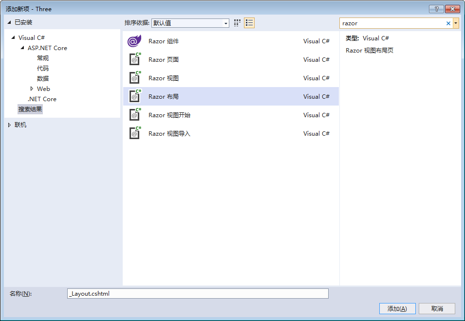
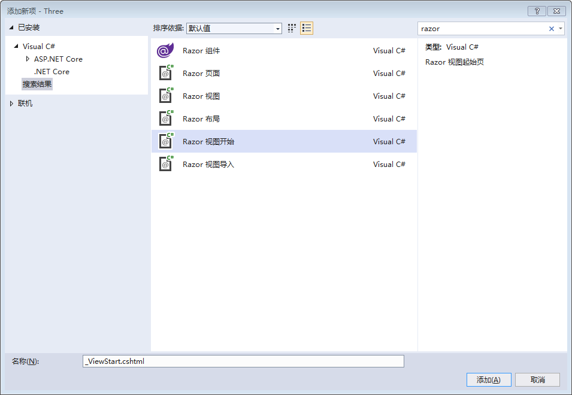

使用MVC相关技术
- Controller
- Tag Helper
- Settings
- View Component
- Razor Page
Controller
添加实体类
项目右键，新建Models文件夹，在Models下添加Department类。
public class Department
{
public int Id { get; set; }
public string Name { get; set; }
public string Location { get; set; }
public int EmployeeCount { get; set; }
}
|
在Models下添加Employee类。
public class Employee
{
public int Id { get; set; }
public int DepartmentId { get; set; }
public string FirstName { get; set; }
public string LastName { get; set; }
public Gender Gender { get; set; }
public bool Fired { get; set; }
}
public enum Gender
{
女 = 0,
男 = 1
}
|
在Models下添加CompanySummary类。
public class CompanySummary
{
public int EmployeeCount { get; set; }
public int AverageDepartmentEmployeeCount { get; set; }
}
|
添加服务
在Serivces下，添加IDepartmentService接口。
public interface IDepartmentService
{
Task<IEnumerable<Department>> GetAll();
Task<Department> GetById(int id);
Task<CompanySummary> GetCompanySummary();
Task Add(Department department);
}
|
在Services下，添加DepartmentService实现类。
public class DepartmentService : IDepartmentService
{
private readonly List<Department> _departments = new List<Department>();
public DepartmentService()
{
_departments.Add(new Department
{
Id = 1,
Name = "HR",
EmployeeCount = 16,
Location = "Beijing"
});
_departments.Add(new Department
{
Id = 2,
Name = "G&D",
EmployeeCount = 52,
Location = "Shanghai"
});
_departments.Add(new Department
{
Id = 3,
Name = "Sales",
EmployeeCount = 200,
Location = "China"
});
}
public Task<IEnumerable<Department>> GetAll()
{
return Task.Run(function: () => _departments.AsEnumerable());
}
public Task<Department> GetById(int id)
{
return Task.Run(function: () => _departments.FirstOrDefault(x => x.Id == id));
}
public Task<CompanySummary> GetCompanySummary()
{
return Task.Run(function: () =>
{
return new CompanySummary
{
EmployeeCount = _departments.Sum(x => x.EmployeeCount),
AverageDepartmentEmployeeCount = (int)_departments.Average(x => x.EmployeeCount)
};
});
}
public Task Add(Department department)
{
department.Id = _departments.Max(x => x.Id) + 1;
_departments.Add(department);
return Task.CompletedTask;
}
}
|
在Services下，添加IEmployeeService接口。
public interface IEmployeeService
{
Task Add(Employee employee);
Task<IEnumerable<Employee>> GetByDepartmentId(int departmentId);
Task<Employee> Fire(int id);
}
|
在Services下，添加EmployeeService实现类。
public class EmployeeService : IEmployeeService
{
private readonly List<Employee> _employees = new List<Employee>();
public EmployeeService()
{
_employees.Add(new Employee
{
Id = 1,
DepartmentId = 1,
FirstName = "Nick",
LastName = "Carter",
Gender = Gender.男
});
_employees.Add(new Employee
{
Id = 2,
DepartmentId = 1,
FirstName = "Michael",
LastName = "Jackson",
Gender = Gender.男
});
_employees.Add(new Employee
{
Id = 3,
DepartmentId = 1,
FirstName = "Mariah",
LastName = "Carey",
Gender = Gender.女
});
_employees.Add(new Employee
{
Id = 4,
DepartmentId = 2,
FirstName = "Axl",
LastName = "Rose",
Gender = Gender.男
});
_employees.Add(new Employee
{
Id = 5,
DepartmentId = 2,
FirstName = "Kate",
LastName = "Winslet",
Gender = Gender.女
});
_employees.Add(new Employee
{
Id = 6,
DepartmentId = 3,
FirstName = "Rob",
LastName = "Thomas",
Gender = Gender.男
});
_employees.Add(new Employee
{
Id = 7,
DepartmentId = 3,
FirstName = "Avril",
LastName = "Lavigne",
Gender = Gender.女
});
_employees.Add(new Employee
{
Id = 8,
DepartmentId = 3,
FirstName = "Katy",
LastName = "Perry",
Gender = Gender.女
});
_employees.Add(new Employee
{
Id = 9,
DepartmentId = 3,
FirstName = "Michelle",
LastName = "Monaghan",
Gender = Gender.女
});
}
public Task Add(Employee employee)
{
employee.Id = _employees.Max(x => x.Id) + 1;
_employees.Add(employee);
return Task.CompletedTask;
}
public Task<IEnumerable<Employee>> GetByDepartmentId(int departmentId)
{
return Task.Run(function: () => _employees.Where(x => x.DepartmentId == departmentId));
}
public Task<Employee> Fire(int id)
{
return Task.Run(function: () =>
{
var employee = _employees.FirstOrDefault(e => e.Id == id);
if (employee != null)
{
employee.Fired = true;
return employee;
}
return null;
});
}
}
|
注册服务
在Startup类中的ConfigureServices方法中，注册服务。
public void ConfigureServices(IServiceCollection services)
{
services.AddControllersWithViews();
services.AddSingleton<IDepartmentService, DepartmentService>();
services.AddSingleton<IEmployeeService, EmployeeService>();
}
|
添加Controller
在Controllers下添加DepartmentController。
public class DepartmentController : Controller
{
private readonly IDepartmentService _departmentService;
public DepartmentController(IDepartmentService departmentService)
{
_departmentService = departmentService;
}
public async Task<IActionResult> Index()
{
ViewBag.Title = "Department Index";
var departments = _departmentService.GetAll();
return View(departments);
}
public IActionResult Add()
{
ViewBag.Title = "Add Department";
return View(new Department());
}
[HttpPost]
public async Task<IActionResult> Add(Department model)
{
if (ModelState.IsValid)
{
await _departmentService.Add(model);
}
return RedirectToAction(nameof(Index));
}
}
|
注意：
- 对于POST请求，必须在方法前写HttpPost特性，不写默认为HttpGet。
- 使用nameof的优点是，当符号重命名时，所有引用之处都会随之重新命名。
在Controllers下添加EmployeeController。
public class EmployeeController : Controller
{
private readonly IDepartmentService _departmentService;
private readonly IEmployeeService _employeeService;
public EmployeeController(IDepartmentService departmentService, IEmployeeService employeeService)
{
_departmentService = departmentService;
_employeeService = employeeService;
}
public async Task<IActionResult> Index(int departmentId)
{
var department = await _departmentService.GetById(departmentId);
ViewBag.Title = $"Employees of {department.Name}";
ViewBag.DepartmentId = departmentId;
var employees = await _employeeService.GetByDepartmentId(departmentId);
return View(employees);
}
public IActionResult Add(int departmentId)
{
ViewBag.Title = "Add Employee";
return View(new Employee
{
DepartmentId = departmentId
});
}
[HttpPost]
public async Task<IActionResult> Add(Employee model)
{
if (ModelState.IsValid)
{
await _employeeService.Add(model);
}
return RedirectToAction(nameof(Index), routeValues: new { departmentId = model.DepartmentId });
}
public async Task<IActionResult> Fire(int employeeId)
{
var employee = await _employeeService.Fire(employeeId);
return RedirectToAction(nameof(Index), routeValues: new { departmentId = employee.DepartmentId });
}
}
|
注意：routeValues的作用是，RedirectToAction方法重定向到Index需要一个参数，通过匿名类型传递参数。
建立视图
项目右键，新建文件夹Views，在Views下新建文件夹Shared，用于存放所有页面的模板。
Shared右键，新建Razor 布局，命名为默认的_layout.cshtml。

设置_layout作为其他所有页面的模板。
Views右键，新建Razor 视图开始，命名为默认的_ViewStart.cshtml。

_ViewStart.cshtml中设置了，所有的页面的母页面是_Layout。